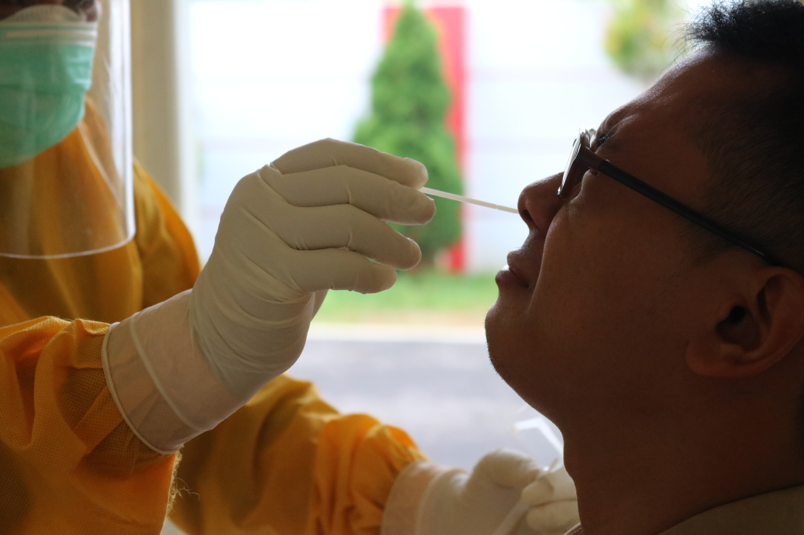
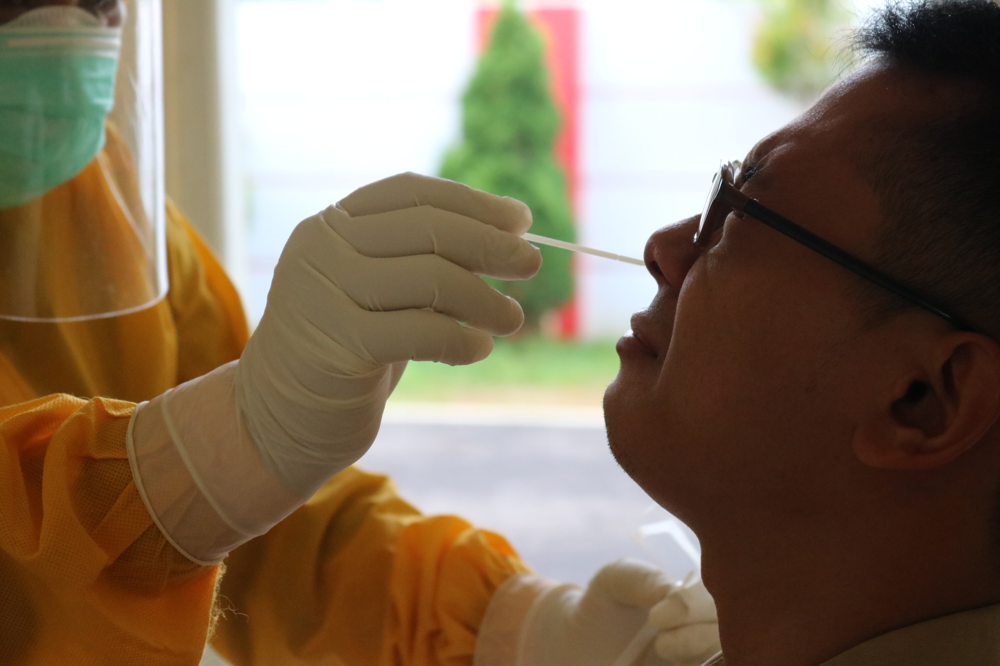
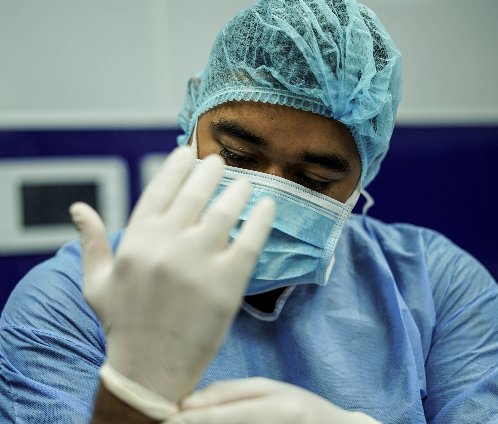
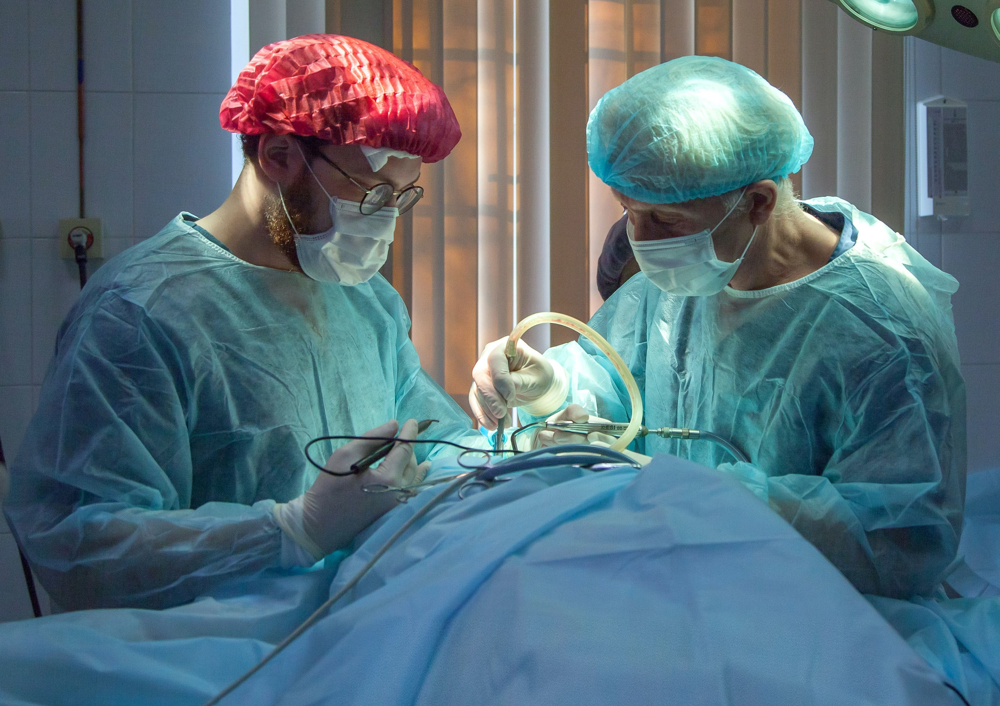
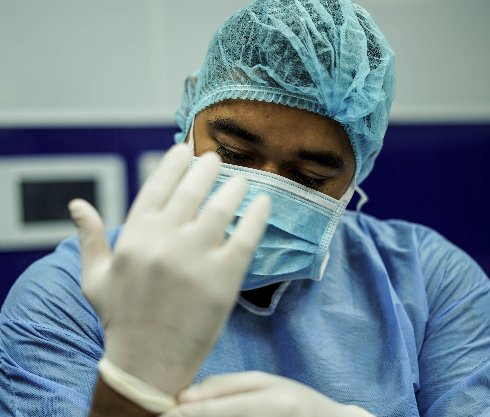
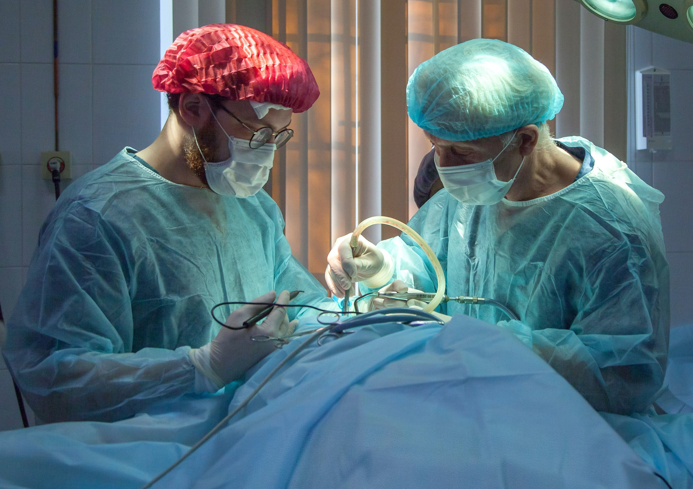

Nuestro servicio
1Mision
Colaborar para mejorar la salud y la calidad de vida de los ciudadanos, ofertando servicios sanitarios excelentes, con el paciente como centro de nuestra atención, y profesionales altamente cualificados, en un hospital privado con vocación docente e investigadora. Asegurar la máxima colaboración e integración con la administración pública, con atención primaria y los servicios socio-sanitarios, las compañías aseguradoras y el Grupo Quironsalud, promoviendo un beneficio mutuo y sostenible para toda la sociedad.
2Vision
Liderar la Transformación del Sistema Sanitario actual para asegurar su sostenibilidad, promoviendo la innovación e incorporando las nuevas tecnologías disponibles. Ser reconocidos como referentes a nivel nacional e internacional, desde la perspectiva asistencial, docente e investigadora.
3Valores
Nuestros valores son los pilares que sustentan nuestra forma de actuar, trabajar y hacer las cosas. Dicen cómo somos hoy y cómo vamos a ser en el futuro. Hablan sobre nuestra manera de entender la salud y nuestra relación con las personas. Nos hacen diferentes y únicos. Son nuestra identidad:
Contamos con

 

 


